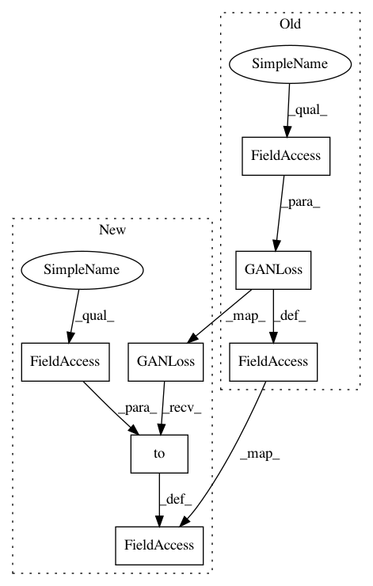

9ba91fa13cbb1e7bc4069e46469b34abb5ca4869,models/cycle_gan_model.py,CycleGANModel,initialize,#CycleGANModel#Any#,13
Before Change
self.fake_A_pool = ImagePool(opt.pool_size)
self.fake_B_pool = ImagePool(opt.pool_size)
// define loss functions
self.criterionGAN = networks.GANLoss(use_lsgan=not opt.no_lsgan, tensor=self.Tensor)
self.criterionCycle = torch.nn.L1Loss()
self.criterionIdt = torch.nn.L1Loss()
// initialize optimizers
self.optimizer_G = torch.optim.Adam(itertools.chain(self.netG_A.parameters(), self.netG_B.parameters()),
After Change
self.fake_A_pool = ImagePool(opt.pool_size)
self.fake_B_pool = ImagePool(opt.pool_size)
// define loss functions
self.criterionGAN = networks.GANLoss(use_lsgan=not opt.no_lsgan).to(self.device)
self.criterionCycle = torch.nn.L1Loss()
self.criterionIdt = torch.nn.L1Loss()
// initialize optimizers
self.optimizer_G = torch.optim.Adam(itertools.chain(self.netG_A.parameters(), self.netG_B.parameters()),
In pattern: SUPERPATTERN
Frequency: 5
Non-data size: 7
Instances
Project Name: richzhang/colorization-pytorch
Commit Name: 9ba91fa13cbb1e7bc4069e46469b34abb5ca4869
Time: 2018-05-22
Author: tongzhou.wang.1994@gmail.com
File Name: models/cycle_gan_model.py
Class Name: CycleGANModel
Method Name: initialize
Project Name: junyanz/pytorch-CycleGAN-and-pix2pix
Commit Name: 9ba91fa13cbb1e7bc4069e46469b34abb5ca4869
Time: 2018-05-22
Author: tongzhou.wang.1994@gmail.com
File Name: models/pix2pix_model.py
Class Name: Pix2PixModel
Method Name: initialize
Project Name: Zhaoyi-Yan/Shift-Net_pytorch
Commit Name: 8f6a6f153781d0908fb0904349aae844494026ea
Time: 2018-12-03
Author: yanzhaoyi@outlook.com
File Name: models/shiftnet_model.py
Class Name: ShiftNetModel
Method Name: initialize